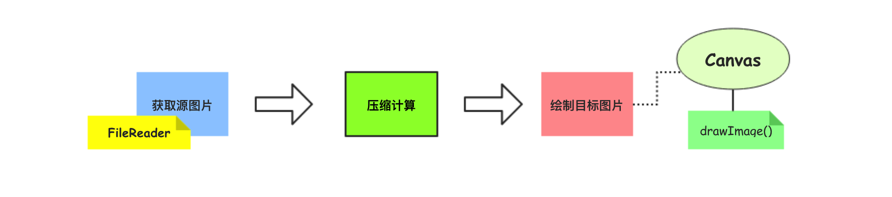
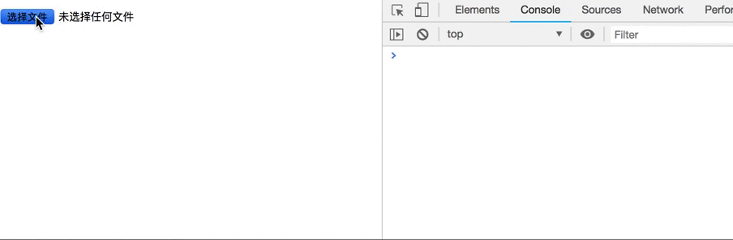

写这篇文章的原因是因为今天早上的时候，突然遇到个需求需要等比例调整照片的大小（主要是想把图片等比例的缩小），我在Mac上通过图片处理软件捣鼓的时候发现比较麻烦，就随手百度了一个在线修改图片尺寸的网站，叫做改图宝。这个网站提供给图片加logo、修改图片尺寸以及印章制作等诸多功能，界面简洁使用方便解决了我的问题，值得推荐。
然而，等到中午的时候，我发现还有一张图片需要处理，恰好电脑连不上网络，我就考虑能不能通过代码自己来实现，因为图片的选择 - 压缩 - 上传在实际开发中也是对应的场景，因此本文将介绍如何利用Canvas画布来对图片进行压缩的技术，包括实现思路和具体的代码。
实现思路

[ 1 ] 获取源图像数据在页面中我们使用
input标签(file类型)来让用户选择对应的文件上传。为了等比例的对图片进行压缩，需要获取源图片的宽度和高度等数据参数，这里使用了
FileReader构造函数(类)。
具体实现的时候，先调用
new FileReader()创建一个FileReader的实例对象，然后为
input标签注册
change事件监听。当用户选择好文件后，需要先检查是否是图片(
通过MIMEType类型判断)，再通过FileReader实例来调用
readAsDataURL(file)方法来读取图片文件的数据信息，以获取源图片文件的宽度和高度信息。
[ 2 ] 计算宽高压缩比数据因为示例代码中演示的等比例的进行缩放(压缩)，因此需要通过得到目标图片的宽度和高度尺寸数据。
这里列出计算部分的
核心代码：
1
2
3
4
5
6
7
8
9
10
11
12
13
14
15
16
17
| var targetWidth,targetHeight;
var imgWidth = img.width, imgHeight = img.height;
var maxWidth = 150, maxHeight = 150;
if (imgWidth > maxWidth || imgHeight > maxHeight) {
if (imgWidth / imgHeight >= 1) {
targetWidth = maxWidth;
targetHeight = Math.round(maxWidth * (imgHeight / imgWidth));
} else {
targetHeight = maxHeight;
targetWidth = Math.round(maxHeight * (imgWidth / imgHeight));
}
}
|
当目标图片(压缩后)的宽高都计算完成后，可以通过Canvas上下文的
drawImage方法来完成图片的绘制，该方法的具体使用可以参考
javaScript系列 [14]-Canvas绘图(图像)这篇文章。
drawImage方法的第一个参数为需要绘制的图片数据，该图片数据即为用户通过input标签选择的文件内容。当然，在具体实现的时候还需要读取文件的内容，监听加载完毕之后再设置Image数据源。
1
2
3
4
| reader.onload = function(event) {
/e.target.result是图片的base64地址信息
img.src = event.target.result;
}
|
完整代码
1
2
3
4
5
6
7
8
9
10
11
12
13
14
15
16
17
18
19
20
21
22
23
24
25
26
27
28
29
30
31
32
33
34
35
36
37
38
39
40
41
42
43
44
45
46
47
48
49
50
51
52
53
54
55
56
57
58
59
60
61
62
63
64
65
66
67
68
69
70
71
72
73
74
75
76
77
78
79
80
81
82
83
84
85
86
87
88
89
90
91
92
93
94
95
96
97
| <!DOCTYPE html>
<html lang="en">
<head>
<meta charset="UTF-8">
<title>Title</title>
</head>
<body>
<input type="file" id="file">
<div id="info" style="font-size: 13px"></div>
<canvas id="canvas" height="200" width="200"></canvas>
<script>
var oInput = document.querySelector('#file');
var reader = new FileReader();
var file = null;
oInput.addEventListener('change', function (event) {
file = event.target.files[0];
var fileType = file.type;
if (fileType.indexOf("image") == 0) {
reader.readAsDataURL(file);
}
});
var img = new Image();
var targetWidth,targetHeight;
reader.onload = function(event) {
img.src = event.target.result;
}
img.onload = function () {
setFileInfo();
var canvas = document.getElementById("canvas");
var ctx = canvas.getContext("2d");
ctx.clearRect(0,0,ctx.canvas.width,ctx.canvas.height);
ctx.drawImage(img, 0, 0, targetWidth, targetHeight);
}
function setFileInfo() {
var fileName = file.name;
var fileSize = (file.size / 1024 / 1024).toFixed(3) + "M";
var imgWidth = img.width, imgHeight = img.height;
var maxWidth = 150, maxHeight = 150;
if (imgWidth > maxWidth || imgHeight > maxHeight) {
if (imgWidth / imgHeight >= 1) {
targetWidth = maxWidth;
targetHeight = Math.round(maxWidth * (imgHeight / imgWidth));
} else {
targetHeight = maxHeight;
targetWidth = Math.round(maxHeight * (imgWidth / imgHeight));
}
var html = "<div>1.已选择图片" + fileName + "，大小为" + fileSize + "。</div>\n" +
"<div>2.图片原尺寸是：" + imgWidth + " x " + imgHeight + "</div>\n" +
"<div>3.图片压缩尺寸：" + maxWidth + " x " + maxHeight + "</div>\n" +
"<div>4.图片已压缩为：" + targetWidth + " x " + targetHeight +"</div>\n";
var oDiv = document.getElementById("info");
oDiv.innerHTML = html;
}
};
</script>
</body>
</html>
|
演示效果
